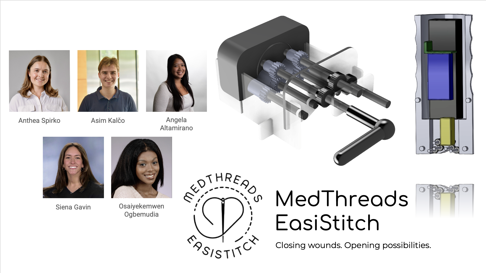
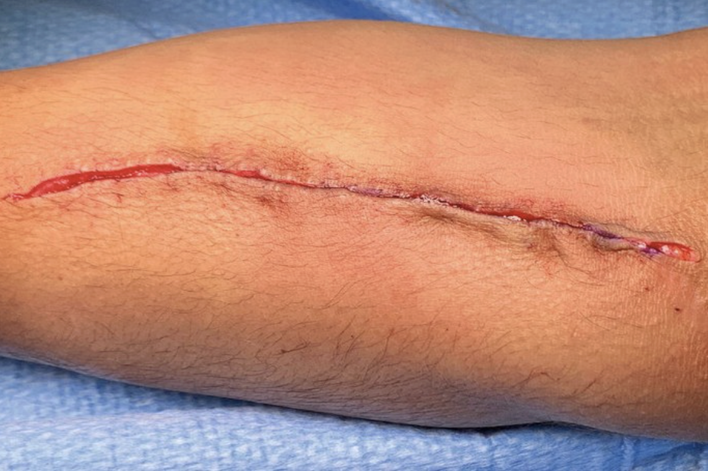
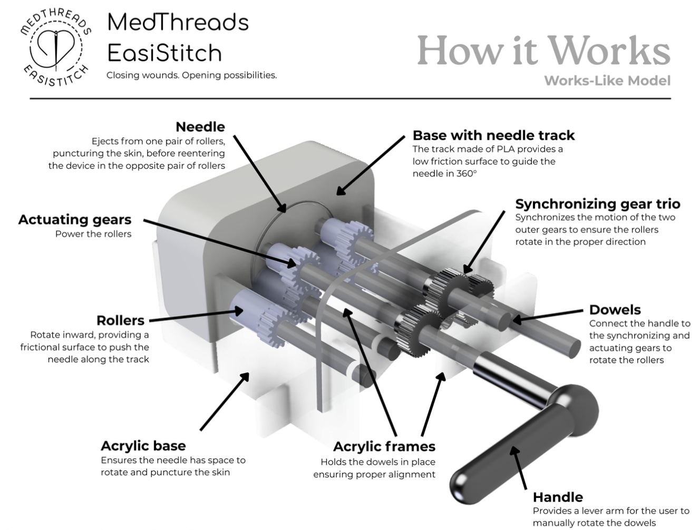

EasiStitch: Automated Suturing Device
A handheld device that pairs the precision of sutures with the speed of staples

Summary
EasiStitch is a single-use handheld suturing device that automates consistent stitch placement to reduce time to closure while improving cosmetic outcomes. A compact gear train synchronizes two roller pairs that drive a curved ½-circle cutting needle around a 360° track, delivering uniform bite depth and spacing with the press of a button. The design targets trauma and operating room workflows where speed, sterility, and repeatability matter.
Time Efficient
Consistent Sutures
Single-Button Actuation
Problem & Approach
Traumatic lacerations account for ~11M ER visits annually in the U.S.. Clinicians must choose between slow, skill-intensive suturing or fast but scar-prone staplers. EasiStitch addresses this trade-off with a simple, ergonomic tool that produces repeatable stitches quickly, aiming to minimize infection and wound dehiscence while improving appearance.
- Hybrid value: precision of sutures + speed of staples
- Human factors: intuitive grip, perpendicular alignment, one-button actuation
- Design for manufacturing: disposable housing, vendor needles, compact drive

Mechanism (How it works)

Drive: A compact gear trio synchronizes two actuating gear sets, spinning paired rollers that grip and guide a curved ½-circle needle along a circular track
Transfer: As one roller pair ejects the needle from tissue, the opposing pair recaptures it to complete the loop, enabling consistent, repeatable stitches
Electronics: A 12V motor (buck-converted from 18V) is switched via a transistor with flyback protection; measured motor power ≈ 1.02 W, safe without heatsink
Needle choice: ½-circle cutting needle provides predictable circular kinematics and low drag, aligning with the geared actuation path
Testing & Results
Prototypes
- Works-Like (5× scale): hand-cranked mechanism validated 360° needle path, roller capture, and puncture through Dermasol skin model.
- Ergonomic model: true-to-size housing validated grip, alignment, and actuation feel with users.
Performance snapshots
- Scaled model completed a closure in ~10 s; trajectory/velocity tracked via video to verify smooth path.
- User study (n=10) showed EasiStitch was comparable to a skin stapler in ease of use and ergonomics
- Economic analysis indicates low production cost and easy manufacturability